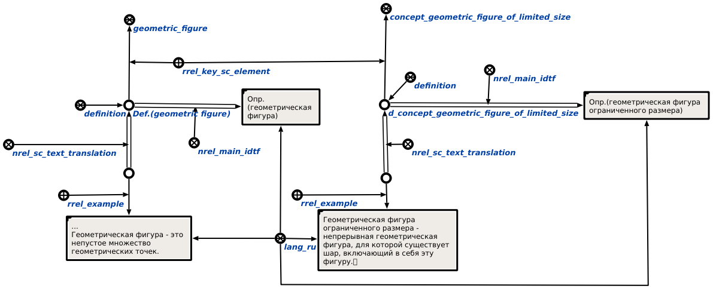

Команда поиска всех утверждений, ассоциированных с заданной сущностью предназначена для поиска всех утверждений и определенний, ассоциированных с заданной сущностью. Единственным входным аргументом команды является сущность, утверждения и определения которой необходимо найти. Результат выполнения команды на примере геометрической фигуры ограниченного размера показан ниже:
